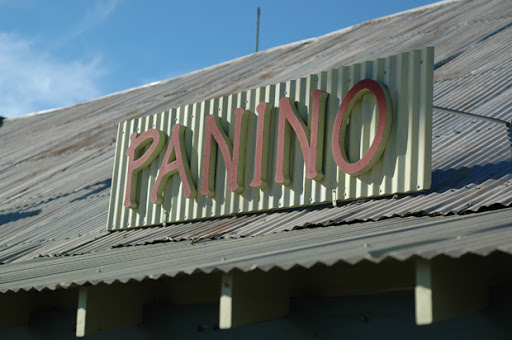
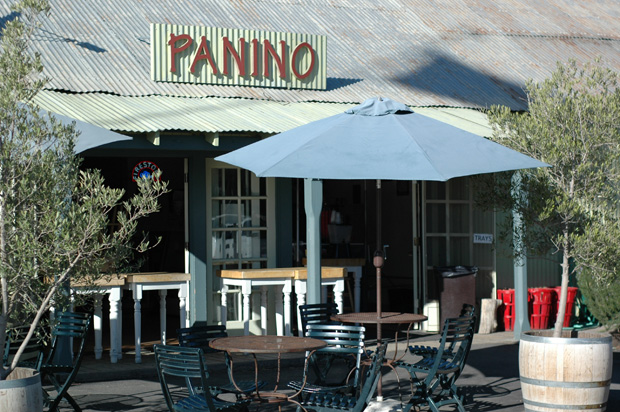
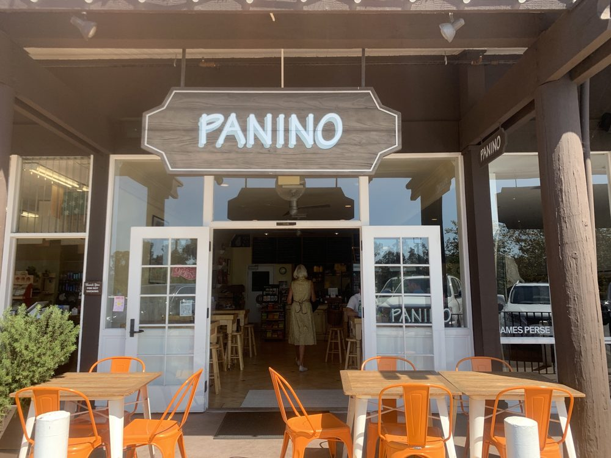
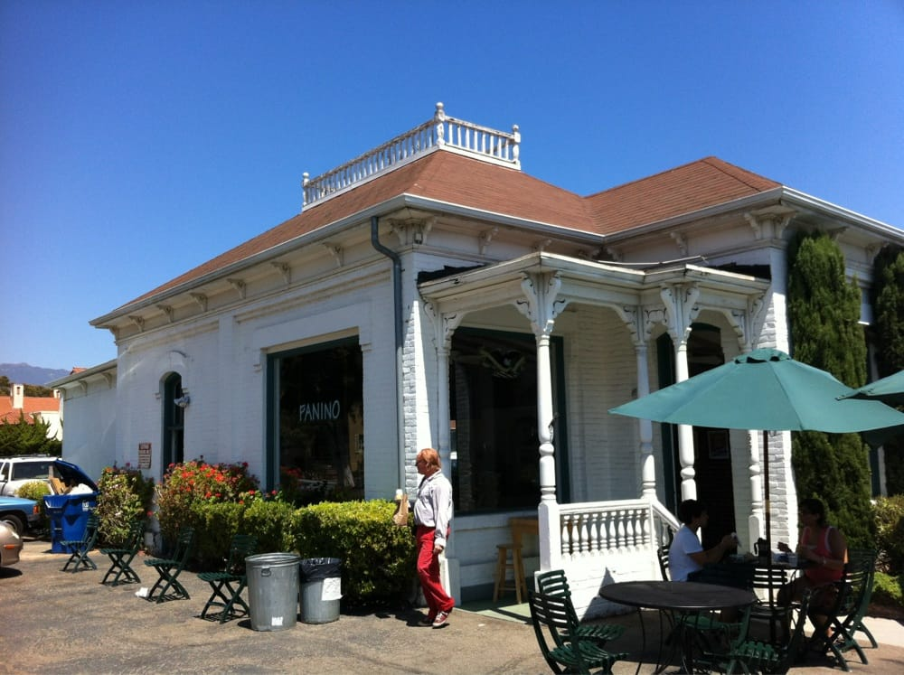
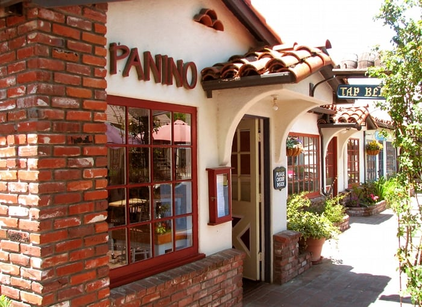
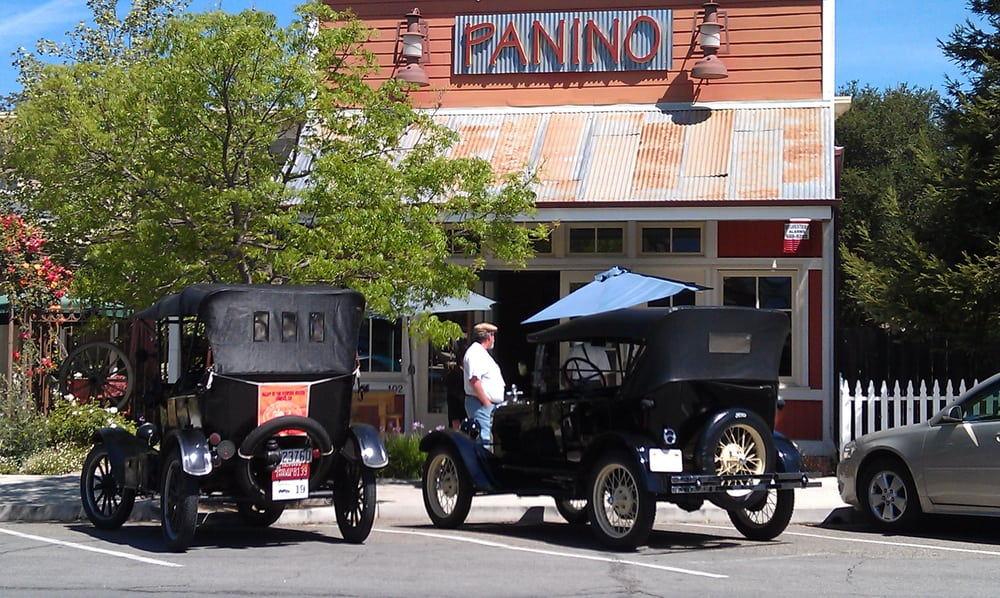

5666 Calle Real Goleta, CA 93117
(805) 683-3670 phone
(805) 683-3680 fax
Panino Goleta is located in the Calle Real Shopping Center, next to Surf Country and near Montecito Bank and Trust. With a large enough order, Panino is happy to deliver to your office. Call us!
2900 Grand Avenue Los Olivos, CA 93441
(805) 688-9304 phone
(805) 688-2552 fax
Panino Los Olivos is in the heart of Los Olivos right next to the flagpole. Panino is the perfect pit stop for a day of wine tasting in the beautiful Santa Ynez Valley.
1014 Coast Village Road Santa Barbara, CA 93108
(805) 565-0137 phone
Panino Montecito is in the Vons Shopping Center next to Montecito Health Foods. Place your order and do your grocery shopping. When you
834 Santa Barbara Street Santa Barbara, CA 93101
(805) 963-3700 phone
(805) 963-3702 fax
Panino Santa Barbara is in Downtown Santa Barbara on the corner of Santa Barbara Street and Canon Perdido Street. It is near the Presidio.
475 1st Street Solvang, CA 93463
(805) 688-0608 phone
Panino Solvang is in this Danish-inspired burg in the Santa Ynez Valley. Literally translated the name means "sunny valley" and many people travel to this area to sample the wine and soak in the weather. The restaurant has a large patio to enjoy Solvang's wonderful Summer weather and is the only Panino location with beer on tap. It's the perfect place to enjoy a break while you explore this amazing area of California.
3569 Sagunto Street Santa Ynez, CA 93460
(805) 688-0213 phone
(805) 688-0214 fax
With the Santa Ynez location, Panino is a top spot to grab lunch, right in the heart of this beautiful town. Come visit us today!
